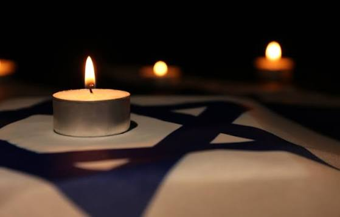
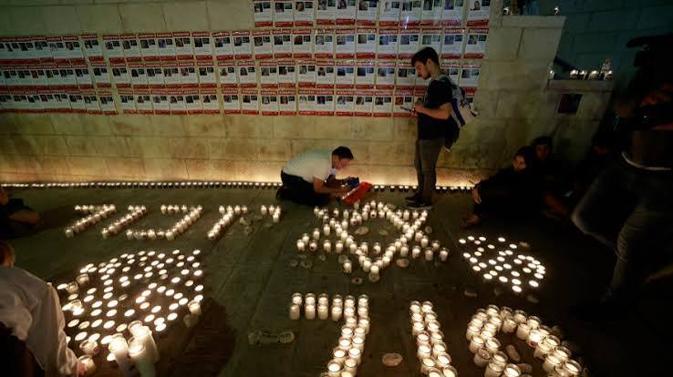

Three years after the events of October 7, 2023, their impact is still felt in Israel and around the world. Many people continue to remember those who were killed, those who were injured, and those who were affected by the events.
In the days around the third anniversary of October 7, memorial events and remembrance ceremonies were held in different places. Families, communities, and many others gathered to remember the victims and to honor their lives and memories.

Memorials, ceremonies, photographs, stories, and personal belongings help keep the memory of the victims alive. Remembering their names and their lives is an important part of the way people continue to deal with the events.
